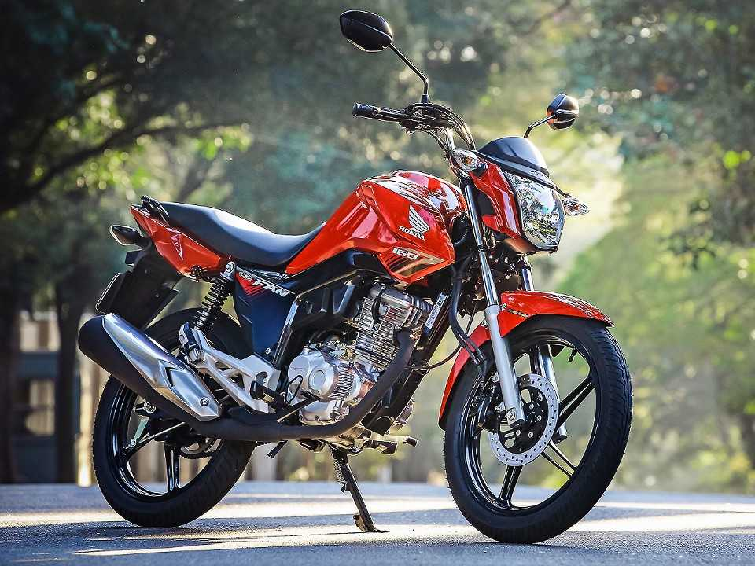

Cub ou Motoneta

A motoneta, ou cub, se preferir, é um tipo de veículo em que se pilota sentado (como numa cadeira), mas não confunda com scooter. Para ajudar a diferenciar, essa categoria deixa os pés expostos, diferente da scooter que tem sempre um tipo de apoio para os pés.
Além disso, outra característica desse veículo em relação aos demais tipos de moto é que se agrega modelos de baixa cilindrada, geralmente entre 100 cm3 e 125 cm³. A mais famosa das CUB é a Honda Biz, sucesso de vendas desde 1998.
Custom
As motos custom deveriam ser sinônimo de conforto. Essa categoria é estilo e preza pelo bem estar do piloto através do assento baixo e largo, com espuma grossa e confortável. Assim, outro ponto também é a presença do comando avançado que faz com que o piloto fique com as pernas mais esticadas.
Street
Chegamos ao tipo mais comum das ruas: a street. Sua principal característica é a pilotagem montado (como em um cavalo) e boa parte da experiência é realizada com os pés, já que o piloto precisa frear e trocar marcha realizando comandos com os pés. Aliás, enquanto em outros mercados outras motos pequenas (como CUB e scooter) se popularizavam, no Brasil as street sempre dominaram a baixa cilindrada, numa verdadeira paixão nacional.
Naked
Já na categoria das nakeds, as motos são mais potentes, variando entre média e alta cilindradas. São, basicamente, versões sem carenagem de motos esportivas. Para a Abraciclo (Associação Brasileira dos Fabricantes de Motocicletas, Ciclomotores, Motonetas, Bicicletas e Similares), elas têm 'motor propositalmente exposto e de alto desempenho'.
Off-road
As motos off-road são destinadas ao uso exclusivo em pisos não pavimentados e fora de estrada. Ou seja, não são homologadas para rodar em vias públicas e são comumente encontradas em competições na terra, como Enduro, Motocross e Rally.
Trail
As motos trail têm rodas de aros grandes, suspensão de curso alongado e DNA aventureiro. Assim, se saem bem tanto em estradas de chão quanto em ruas esburacadas. São motos todo terreno.
De tamanho limitado, essas motos geralmente oferecem um baixo custo ao dono, tanto em manutenção como em combustível. Dois bons exemplos são a Bros da Honda e a Yamaha Crosser, assim como as XRE 300 e Lander 250.
Big Trail
Contudo, a big trail já entrega seu potencial pelo nome: uma grande moto aventureira. Assim, como a trail essa categoria oferece a opção de uso dentro e fora da estrada só que em motos de alta cilindrada. Desta forma os modelos são altos, com suspensão robusta e confortável, para-brisa e, atualmente, belos pacotes eletrônicos.
Scooter
Essa categoria podemos distinguir de todas as outras facilmente. Pois, para pilotar as scooters piloto vai sentado como nas Cubs ou motonetas, contudo, os dois pés ficam protegidos dentro da carenagem e nas motocicletas o piloto vai montado e não sentado. Outra característica está no câmbio, já que os scooter são invariavelmente automáticos.
Speed ou Esportiva
Ah, as esportivas! Essa categoria pode ocasionar fortes sintomas de cobiça. Brincadeiras à parte, as motos esportivas possuem como característica a adoção de carenagens que favorecem uma boa aerodinâmica, além do uso de motores de alto desempenho.
Além disso, a posição de pilotagem dessas motos é adiantada ao guidão fazendo com que o piloto fique mais deitado para conduzir a esportiva - ou seja, nem pense em conforto para o garupa. Quando a esportiva tem média cilindrada (cerca de 600 cm³) é considerada uma supersort, ao passo que as motos de alta cilindrada (1000 cm³) são chamadas de superesportivas - ou superbike.
Touring
Se você é amante de motos e quer aliá-la a longas viagens, a categoria touring é a ideal para você. Essas motos são equipadas com motor potente, tecnologia embarcada de ponta e conforto de carros luxuosos.